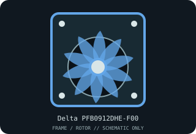

[ INDIVIDUAL COMPONENT // COOLING ]
Delta PFB0912DHE-F00
Delta 92 × 92 × 38 mm axial frame server/equipment axial fan. Identify by the complete model and suffix on the label; related series members may differ in depth, lead count, speed, controls and load.

IDENTIFICATION: Match the complete printed model and suffix to the physical part. These records describe individual Delta SKUs, not interchangeable series families.
Specifications
| Catalog subcategory | Server fans and blowers |
|---|---|
| Exact model | Delta PFB0912DHE-F00 |
| Frame | 92 × 92 × 38 mm axial frame |
| Electrical rating | 12 V DC; 3.10 A; 37.20 W |
| Rotational speed | 8,000 RPM |
| Airflow / static pressure | Consult the model-specific manufacturer curve; do not carry over figures from a PFB0912 or suffix variant. |
| Connector and signal | Three lead wires with tachometer speed-sensor output; verify the specific plug/pinout and host tach logic. |
Server and system compatibility cautions
The 37.2 W rating is far beyond typical motherboard fan-header limits. Use a suitable 12 V fan tray/controller and verify current at startup, 38 mm depth, guard and system fan-failure behavior.
- Disconnect power before service; retain the system’s guards and airflow direction, and keep cables clear of the impeller.
- Never infer pinout, control protocol, startup current or fan-failure reporting from wire color or a similar model. Follow the host service manual and the exact Delta drawing.
- After replacement, verify tach/fan-failure monitoring and cooling under a monitored system load before returning the host to service.
Manufacturer documents
- Delta Fan — Delta PFB0912DHE-F00 product recordManufacturer model identification and published product ratings.
- Delta Electronics — Delta PFB0912DHE-F00 specification PDFManufacturer datasheet for the exact model family; check the model suffix, drawing, limits and performance curve against the labeled unit.
Use the linked manufacturer documents and the server/system manual as final authority. This static archive entry is not an electrical or compatibility guarantee.